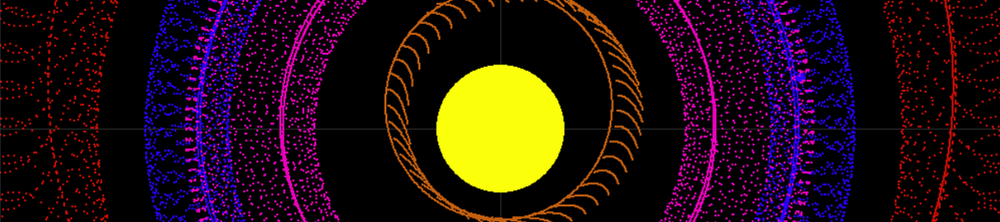
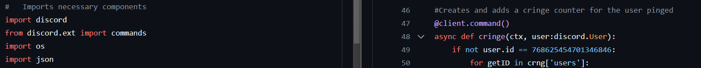
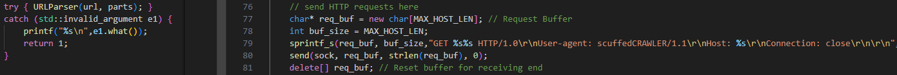

Many of these are just a work-in-progress or planned, but here are a few noteworthy ones!
-
Orbital Simulator: My first collaborative project written in Python simulating
the physics of the four inner planets. The simulation can run in real-time or up to 1,000,000x speed.

-
Custom Discord Bot: A private repository which was my first look into the Discord API, a popular social platform
I utilize. An earlier project with many errors, this was one of the first steps into the coding scene and sparked a passion to combine fun, interactivity, programming, and utility.
Written in Python and currently hosted on a personal server.

-
(WIP) HTTP Web Crawler/ScuffedCrawler: A C++ project for my Networks and Distributed Processing class that utilizes HTTP1.0 calls.
Utilizes Windows-based sockets to connect
to a list of URLs that run on the HTTP protocol. Supports multiple threads and respects the Robots Exclusion Protocol.
Does not include HTTPS protocols.

-
(Planned) Custom Raytracing Engine: An engine utilizing CMake and C++ that mimics graphical raytracing. The final project of the Computer
Graphics course alongside other rendering projects.
-
(Planned) Project V: A custom face-tracking software utilizing NVIDIA to track a virtual avatar through the tracking of facial features. A marriage between
a hobby of mine and programming, this project helps create a bridge to fine-tune virtual avatar software into accepting or enabling a larger range of expressions.
-
(Planned) Project µ: A rhythm-based hack-and-slash game utilizing the Godot engine. This project is one of my biggest ambitions as I hope to self-publish this
game in a clean and polished state. Inspired by Hades the game and
Hi-Fi RUSH, I plan to develop an in-depth world of characters with rhythmic concepts implemented as power-ups
or combat mechanics.
I plan to do both the creative and technical designs of this game.
All other unlisted projects can be found on my
GitHub.